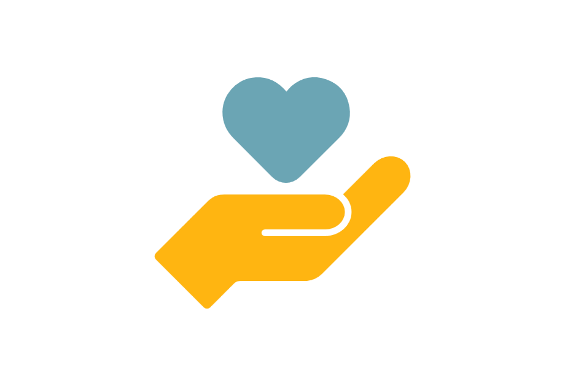

LA MIA ESPERIENZA
Durante la mia esperienza da stagista nella filiale Randstad di Paderno Dugnano ho potuto conoscere le metodiche sul reclutamento di nuovo personale per le aziende convenzionate con l'agenzia.
Inizialmente, nelle prime settimane, le mie mansioni comprendevano prevalentemente lo screening di vecchi curricula.
Nelle settimane successive, prendendo confidenza con le procedure, sono stata in grado di creare annunci da apporre sulle vetrine dell'agenzia e di ricercare autonomamente le varie figure professionali di cui la filiale aveva bisogno.
Inoltre mi sono occupata del contatto telefonico con i candidati, facendo così una prima scrematura. Le figure professionali ricercate spaziavano dal magazziniere, all'assistente alla poltrona, piuttosto che cameriere e commessa.
Ho imparato che il mondo del lavoro è complesso: in realtà non basta cercare un lavoro per ottenerlo e la prima impressione è quella che conta.
Mi sono anche impratichita di alcune procedure informatiche.
